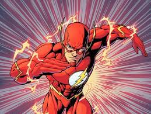
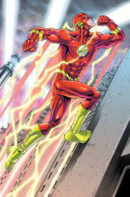

THE FLASH

O famoso Velocista Escarlate, ganhou seus poderes quando foi atingido por um raio enquanto estava em seu laboratório em contato com produtos químicos.
Há outros velocistas que também assumiram a indentidade de Flash, como Wally West que também já apareceu como Kid Flash
